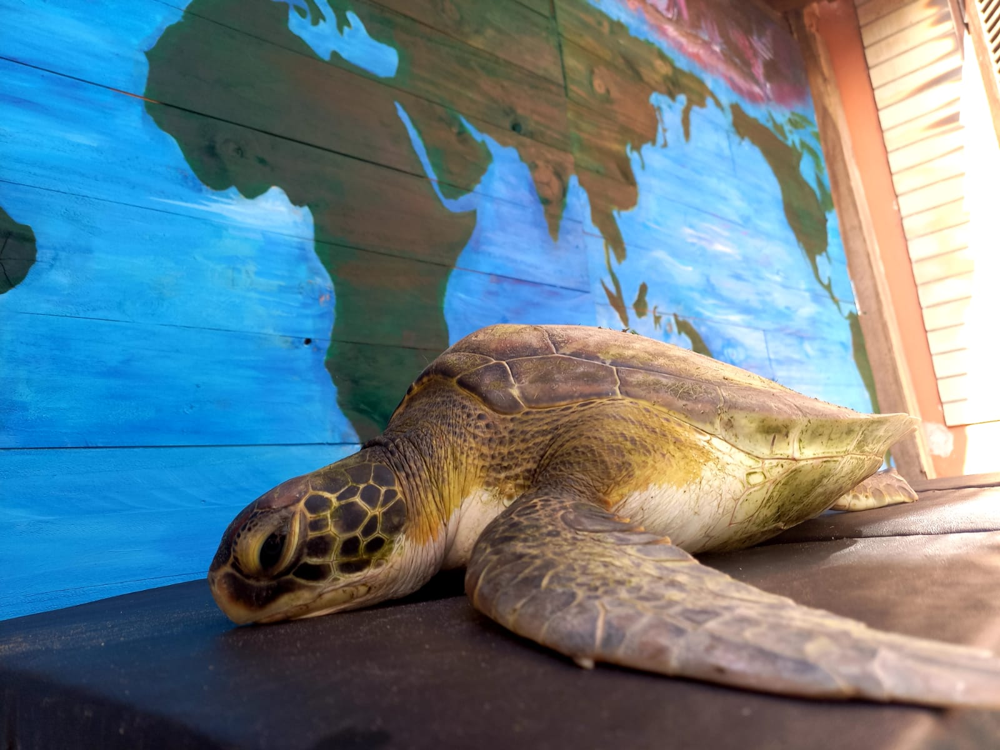
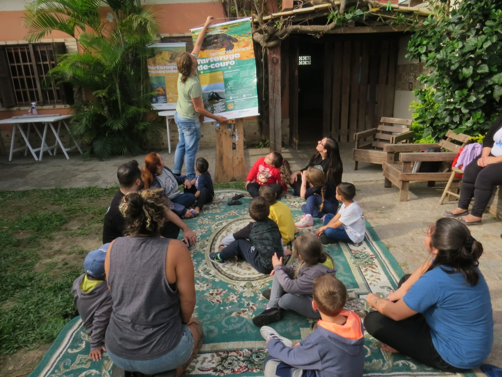
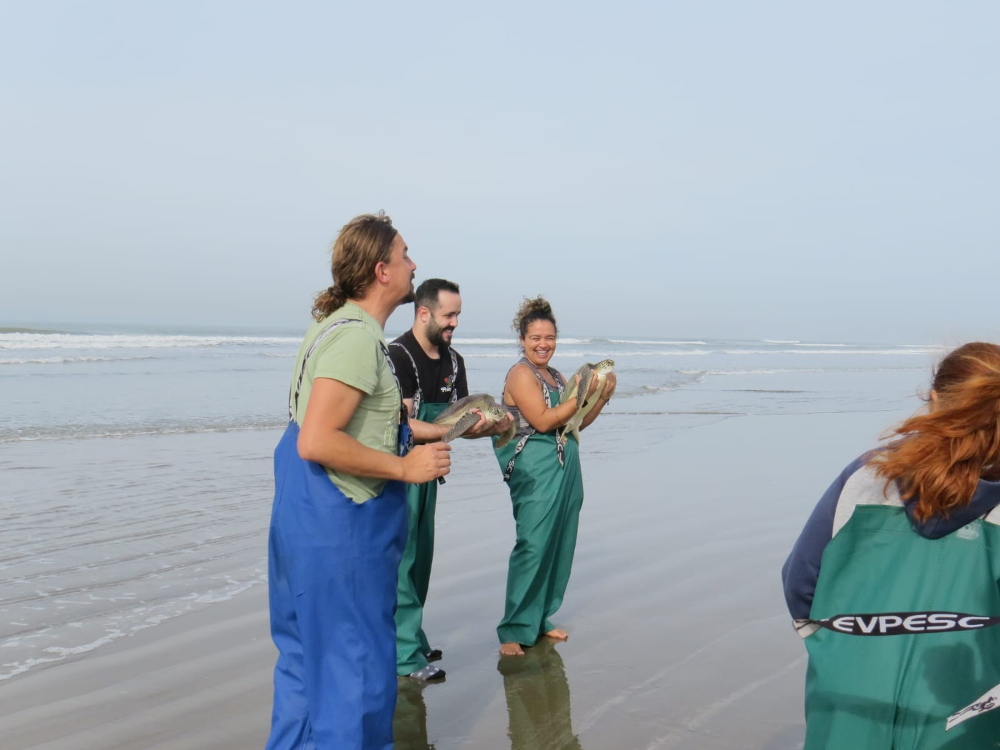

Conservação de tartarugas marinhas no R
Eu e minha trajetória
Me chamo Letícia Verônica dos Santos, nasci no interior de São Paulo, fiz um ano de Ciências Biológicas, dois anos de Ciencias da Natureza, mas foi na Oceanologia que realmente me encontrei e me encantei, me formei cientista dos oceanos em 2019. Recebi minha outorga na última celebração presencial da universidade antes da pandemia. Por conta de tudo vivido, na época tive que interromper minhas atividades desenvolvidas pelo NEMA com pescadores no Porto Histórico de Rio Grande. Passei um tempo trabalhando em cozinhas e salões de restaurantes para arcar com as despesas que não pararam mesmo com o lockdown.
Passados três anos, com algumas reviravoltas muito positivas recebi um convite para conhecer as atividades do Caminho Marinho.
Caminho Marinho
A primeira tartaruga que auxiliei na biometria ao lado do meu grande parceiro corinthiano Baila, foi homenageada com meu apelido universitário, a tartaruga n.74 do ano de 2023 se chama Dentinho. Foram necessários 6 anos de graduação e mais 3 pandêmicos para que eu pudesse ter meu primeiro contato com uma tartaruga viva, linda, forte, preciosa.
Redescobri naquele dia meu amor pela Oceano que parecia estar em ambientes bem hadais naquele momento, me fazendo querer tanto aprender mais sobre a ocorrência dessas tartarugas por aqui, que acabou me impulsionando a fazer mestrado pelo Instituto de Matemática Estatística e Física para entender e atuar mais em atividades de conservação marinha.

Anexado aqui está o site oficial do projeto aps interessados, para que pesquisem e conheçam melhor:
O projeto de mestrado
O meu trabalho de mestrado buscará determinar a variabilidade de ocorrência de tartarugas-verde (Chelonia mydas) no litoral sul do Brasil, mais especificamente na praia do Cassino-RS e de Itapirubá-SC.
Como objetivo principal, temos a avaliação de qualidades oceanográficas, ambientais e meteorológicas para essas ocorrências, tanto em avistagens de ponto fixo, quanto para capturas incidentais.
O projeto conta com colaboradores, estagiários e voluntários que chegam ao Caminho Marinho, tanto por caminhos acadêmicos, quanto de conservação e interesses variados, trazendo pessoas de vários lugares do país e do planeta, com atividades diretas de conservação e de educação ambiental.

Metodologia
Ainda em desenvolvimento, mas realiza-se resgates ou capturas intencionais, biometria coletando dados de peso, tamanho, foto identificação, nomeação e marcação com tags cedidas pelo TAMAR. Pós a coleta desses dados, quando aptos (o que acontece em praticamente 100% dos casos de reabilitações do projeto), os animais são liberados de voltar ao mar!

huashsaushausah